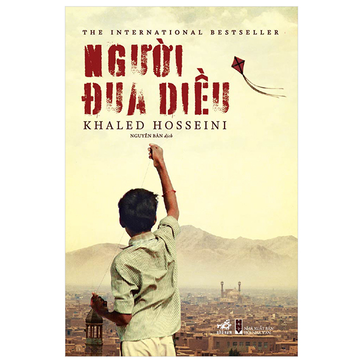

Những tác phẩm hay
Cây cam ngọt của tôi
É MAURO DE VASCONCELOS (1920-1984) là nhà văn người Brazil. Sinh ra trong một gia đình nghèo ở ngoại ô Rio de Janeiro, lớn lên ông phải làm đủ nghề để kiếm sống. Nhưng với tài kể chuyện thiên bẩm, trí nhớ phi thường, trí tưởng tượng tuyệt vời cùng vốn sống phong phú, José cảm thấy trong mình thôi thúc phải trở thành nhà văn nên đã bắt đầu sáng tác năm 22 tuổi. Tác phẩm nổi tiếng nhất của ông là tiểu thuyết mang màu sắc tự truyện Cây cam ngọt của tôi. Cuốn sách được đưa vào chương trình tiểu học của Brazil, được bán bản quyền cho hai mươi quốc gia và chuyển thể thành phim điện ảnh. Ngoài ra, José còn rất thành công trong vai trò diễn viên điện ảnh và biên kịch.
Nhà giả kim
Tiểu thuyết Nhà giả kim của Paulo Coelho như một câu chuyện cổ tích giản dị, nhân ái, giàu chất thơ, thấm đẫm những minh triết huyền bí của phương Đông. Trong lần xuất bản đầu tiên tại Brazil vào năm 1988, sách chỉ bán được 900 bản. Nhưng, với số phận đặc biệt của cuốn sách dành cho toàn nhân loại,
vượt ra ngoài biên giới quốc gia, Nhà giả kim đã làm rung động hàng triệu tâm hồn, trở thành một trong những cuốn sách bán chạy nhất mọi thời đại, và có thể làm thay đổi cuộc đời người đọc.
Người đua diều

Khaled Hosseini, sinh năm 1965 tại Kabul, Afghanistan, hiện sống tại Mỹ. Những hồi ức tuổi thơ,
kho tàng thơ ca Afganistan cùng mối liên hệ với những người Afgan thuộc chủng tộc Hazara đã gợi cảm hứng cho ông viết nên cuốn tiểu thuyết đầu tay xuất sắc Người đua diều.